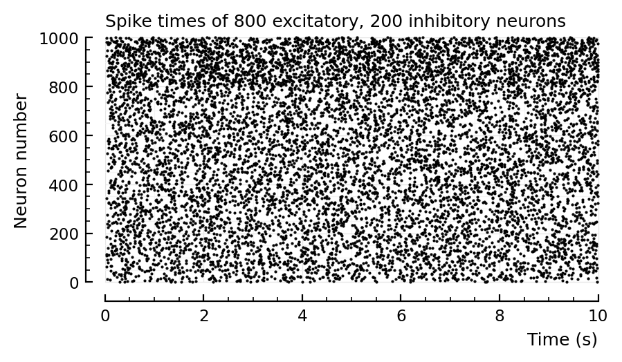
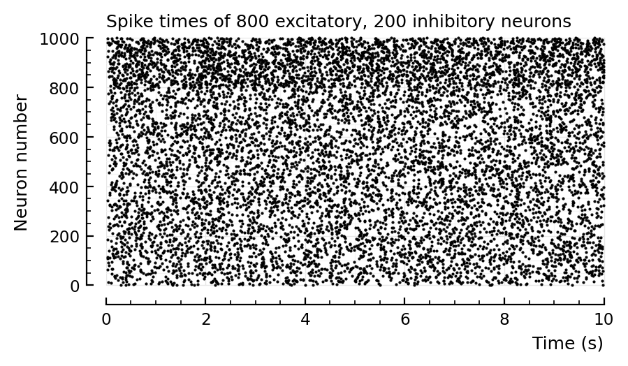

2022-07-01 • g_EI
Contents
2022-07-01 • g_EI¶
Playing with the between-group synaptic strengths and their effect on firing rate distributions.
Imports¶
#
using Revise
using MyToolbox
using VoltoMapSim
[ Info: Precompiling VoltoMapSim [f713100b-c48c-421a-b480-5fcb4c589a9e]
Sim¶
import PyPlot
using VoltoMapSim.Plot
function sim_and_plot(; params...)
p = get_params(; params...)
s = cached(sim, [p.sim])
num_spikes = length.(s.spike_times)
sum(num_spikes) > 0 || error("no spikes")
spike_rates = num_spikes ./ p.sim.general.duration
histplot_fr(spike_rates)
rasterplot(s.spike_times, tlim=[0,10]seconds)
return p, s, spike_rates
end;
4:1¶
sim_and_plot(
duration = 20seconds,
g_EE = 1,
g_EI = 1,
g_IE = 4,
g_II = 4,
);
# Default values
d = 2 # to lower firing rate
sim_and_plot(
duration = 20seconds,
g_EE = 1 / d,
g_EI = 4 / d,
g_IE = 1 / d,
g_II = 4 / d,
);
# Previous, wrong values
 

Aggregated over E and I, you can indeed be fooled that the fr histogram is lognormal.
Roxin2011¶
d = 6
p, s, spike_rates = sim_and_plot(
duration = 10seconds,
g_EE = 1 / d,
g_EI = 18 / d,
g_IE = 36 / d,
g_II = 31 / d,
);
# Roxin2011 values
Recreating plots from roxin.
Here: aggregate spike rates of inh and exc, on log scale
bins = exp10.(-1:0.2:1)
fig, ax = plt.subplots()
ax.hist(spike_rates; bins, histtype="step")
set(ax, xscale="log", xlabel="Firing rate (Hz)", xlim=(0.1,10));
Note that Roxin firing rates have much wider range: from 0.01 to 100
fig, ax = plt.subplots(figsize=(8,1.3))
plotsig(s.timesteps / ms, s.voltage_traces[1] / mV; ax, tlim=[0,1000], xlabel="Time (ms)");
No lognormal weights¶
Roxin2011 finds that wider synaptic strength distribution gives narrower firing rate distribution. So let’s do as they do in most plots, and give no variance at all to the synaptic weights.
d = 6
p, s, spike_rates = sim_and_plot(
duration = 20seconds,
g_EE = 1 / d,
g_EI = 18 / d,
g_IE = 36 / d,
g_II = 31 / d,
syn_strengths = LogNormal_with_mean(20nS, 0) # ← zero variance
);
# Roxin2011 values
Running simulation: 100%|███████████████████████████████| Time: 0:00:09
Saving output at `C:\Users\tfiers\.phdcache\datamodel v2 (net)\sim\61e108c7773a503f.jld2` … done (0.2 s)
Result: nope. Not wider
Positive-mean input current¶
Positive as in: excitatory. (Previous defaults had zero-mean input current. But Roxin had positive mean; dV/dt ~ +I_ext in their eq. In our eq, dV/dt ~ –I_ext).
Also, they have lower p_conn than our default of 10%. (Result after changing this: not much difference)
1/√.1ms
3162.277660168379
d = 6
p, s, spike_rates = sim_and_plot(
duration = 3seconds,
p_conn = 0.04,
g_EE = 1 / d,
g_EI = 18 / d,
g_IE = 36 / d,
g_II = 31 / d,
ext_current = Normal(-0.42 * pA/√seconds, 4 * pA/√seconds),
);
# Roxin2011 values
Running simulation: 100%|███████████████████████████████| Time: 0:00:01
Saving output at `C:\Users\tfiers\.phdcache\datamodel v2 (net)\sim\2d8e1e3dedc55948.jld2` … done (0.1 s)
The longer you simulate, the narrower both distributions seem to become.
So I could see obtaining the approximate results of Roxin2011 figure 8:
simulate for a short time (they did not report their simulation time. But given that they have 2000x the number of neurons as us here, it can’t have been very long).
give the inhibitory neurons less external current (which is indeed what they did): their distribution will then overlap more with the excitatory one
plot the firing rates in aggregate (not separate as I did here).
Shape of normal on log scale¶
x = 1:0.01:10
y = @. exp(-(x-5)^2 / 3)
fig,ax = plt.subplots()
ax.plot(x,y);
set(ax, xscale="log");
Looks like the “very close to lognormal” plots in roxin.
Truncated normal is ‘heavy tailed’¶
Fig 5C of Roxin
distr = TruncatedNormal(1Hz, 7Hz, 0Hz, Inf*Hz) # mean, std, left bound, right bound
fr = rand(distr, 12500)
plt.hist(fr, bins=30, ec="k", fc="w")
plt.plot(mean(fr), -50, "w^", clip_on=false, mec="k", ms=8)
plt.plot(median(fr), -50, "k^", clip_on=false, mec="k", ms=8)
plt.ylim(bottom=0)
plt.xlim(0, 40);
median(fr), mean(fr)
(5.1193548485998175, 5.988978579872706)
tbf Roxin had a bit larger diff between these.
Sum of two normals¶
distr = truncated(MixtureModel(Normal, [(2Hz,5Hz), (8Hz,6Hz)], [0.8, 0.2]), lower=0Hz)
fr = rand(distr, 10_000)
plt.hist(fr, bins=20, ec="k", fc="w");
log scale:
bins = exp10.(-1:0.2:3)
fig, ax = plt.subplots()
ax.hist(fr; bins, histtype="step")
set(ax, xscale="log", xlim=(0.1,100));
Looks very much like fig 8D.
Sanity check¶
p, s, spike_rates = sim_and_plot(
duration = 3seconds,
g_EE = 0,
g_EI = 0,
g_IE = 600,
g_II = 0,
to_record = [696],
);
Running simulation: 100%|███████████████████████████████| Time: 0:00:01
Saving output at `C:\Users\tfiers\.phdcache\datamodel v2 (net)\sim\4154eaf3081de0da.jld2` … done (0.8 s)
s.spike_times[812] / ms .+ 10
1-element Vector{Float64}:
1021.599999999905
s.spike_times[696] / ms
10-element Vector{Float64}:
1022.0999999999038
1022.2999999999038
1022.4999999999038
1022.8999999999038
1023.2999999999037
1023.6999999999036
1024.0999999999037
1024.4999999999036
1025.0999999999035
1025.8999999999035
v,u,g_exc,g_inh = s.signals[696];
@unpack E_exc, E_inh = p.sim.general.synapses
I = @. ( g_exc * (v - E_exc)
+ g_inh * (v - E_inh));
plotsig(s.timesteps / ms, (v .- E_inh) / mV, tlim=[1021,1022], marker=".", linestyle="None");
plotsig(s.timesteps / ms, I / nA, tlim=[1021,1022], marker=".", linestyle="None");
plotsig(s.timesteps / ms, s.signals[696].v / mV, tlim=[1021,1022], marker=".", linestyle="None");
plotsig(s.timesteps, s.signals[696].v / mV, tlim=[1.021,1.022]);
plotsig(s.timesteps, s.signals[696].v / mV, tlim=[1.02,1.04])

PyObject <AxesSubplot:>
plotsig(s.timesteps, s.signals[696].u / pA, tlim=[1.02,1.04]);
plotsig(s.timesteps, s.signals[696].g_inh / nS, tlim=[1.02,1.04]);
numspikes = length.(s.spike_times)
ComponentVector{Int64}(exc = [1, 3, 0, 0, 1, 0, 3, 1, 0, 1 … 1, 0, 0, 0, 1, 1, 2, 1, 0, 2], inh = [1, 1, 2, 2, 1, 3, 2, 3, 2, 1 … 1, 1, 2, 1, 0, 0, 4, 2, 3, 1])
findmax(numspikes) # (val, index)
(58, 696)
s.spike_times[696] / ms
58-element Vector{Float64}:
283.09999999998513
283.2999999999851
283.6999999999851
284.099999999985
284.499999999985
284.8999999999849
285.2999999999849
285.69999999998487
286.2999999999848
951.6999999999115
951.8999999999114
952.0999999999115
952.4999999999114
⋮
1876.0999999998098
1876.6999999998097
2310.800000000452
2311.0000000004525
2311.4000000004535
2311.800000000454
2312.200000000455
2312.600000000456
2313.0000000004566
2313.4000000004576
2314.000000000459
2315.0000000004607
Clusters, these always start a bit more than 10 ms (tx delay) after the input spikes of 812. (found by printing spiketimes of all 696’s inputs)
s.spike_times[812] / ms
6-element Vector{Float64}:
272.39999999998633
941.1999999999126
1694.1999999998297
1784.5999999998198
1862.9999999998113
2300.40000000043
labels(s.neuron_IDs)[812]
"inh[12]"
I wanna know if syn between these two is particularly strong.
[syn for syn in s.output_synapses[812] if s.postsyn_neuron[syn] == 696]
1-element Vector{Int64}:
69244
s.syn_strengths[69244] / nS
3894.2034540205022
sort(s.syn_strengths[s.syns.inh_to_exc] / nS)
15923-element Vector{Float64}:
1.9766044536578071
2.188271086170034
2.2988694124487004
2.386741975213665
2.5107083436583952
2.5866747022907055
2.6547608771121114
2.749536896693771
2.7665108323914187
2.9194501336756873
2.974603768194044
3.1030473064492887
3.1350052682906
⋮
1968.049722427362
1984.9063895892796
1999.3965878497127
2072.4237489509205
2182.278608908274
2273.2785123338335
2467.500389769674
3173.2421412651684
3240.673205030154
3894.2034540205022
3899.103610867894
5048.3299605142765
So our man has the second highest synaptic strength.
plt.hist(length.(values(s.input_neurons)));
More sanity check¶
p, s, spike_rates = sim_and_plot(
duration = 3seconds,
g_EE = 0,
g_EI = 4,
g_IE = 0,
g_II = 0,
);
Running simulation: 100%|███████████████████████████████| Time: 0:00:04
Saving output at `C:\Users\tfiers\.phdcache\datamodel v2 (net)\sim\672f35a5c394ef4f.jld2` … done (0.7 s)
p, s, spike_rates = sim_and_plot(
duration = 3seconds,
g_EE = 1,
g_EI = 0,
g_IE = 0,
g_II = 0,
);
Running simulation: 100%|███████████████████████████████| Time: 0:00:03
Saving output at `C:\Users\tfiers\.phdcache\datamodel v2 (net)\sim\254ca9b5e1177bf4.jld2` … done (0.7 s)
p, s, spike_rates = sim_and_plot(
duration = 3seconds,
g_EE = 0,
g_EI = 0,
g_IE = 0,
g_II = 400,
);
Running simulation: 100%|███████████████████████████████| Time: 0:00:04
Saving output at `C:\Users\tfiers\.phdcache\datamodel v2 (net)\sim\2b7013ee6055458c.jld2` … done (0.5 s)
Params to do conntest with¶
plotsig(s.timesteps, s.signals[1].v)
PyObject <AxesSubplot:>
d = 8
p, s, spike_rates = sim_and_plot(
duration = 30seconds,
p_conn = 0.04,
g_EE = 1 / d,
g_EI = 18 / d,
g_IE = 36 / d,
g_II = 31 / d,
ext_current = Normal(-0.5 * pA/√seconds, 5 * pA/√seconds),
E_inh = -80 * mV,
);
# This is based on above, "pos mean input current" & roxin
Running simulation: 100%|███████████████████████████████| Time: 0:00:33
Saving output at `C:\Users\tfiers\.phdcache\datamodel v2 (net)\sim\56c7922ed33f58e2.jld2` … done (0.3 s)
Distributions same width if 3 or 30 seconds. good.
d = 6
p, s, spike_rates = sim_and_plot(
duration = 3seconds,
p_conn = 0.04,
g_EE = 1 / d,
g_EI = 18 / d,
g_IE = 36 / d,
g_II = 31 / d,
ext_current = Normal(-0.5 * pA/√seconds, 5 * pA/√seconds),
E_inh = -80 * mV,
);
# This is based on above, "pos mean input current" & roxin
Running simulation: 100%|███████████████████████████████| Time: 0:00:04
Saving output at `C:\Users\tfiers\.phdcache\datamodel v2 (net)\sim\35f3dc9269315d68.jld2` … done (0.2 s)
d = 6
p = get_params(
duration = 10minutes,
p_conn = 0.04,
g_EE = 1 / d,
g_EI = 18 / d,
g_IE = 36 / d,
g_II = 31 / d,
ext_current = Normal(-0.5 * pA/√seconds, 5 * pA/√seconds),
E_inh = -80 * mV,
to_record = [1, 801],
);
s = cached(sim, [p.sim]);
Running simulation: 100%|███████████████████████████████| Time: 0:14:37
Saving output at `C:\Users\tfiers\.phdcache\datamodel v2 (net)\sim\d870417302bc9f1c.jld2` … done (1.6 s)